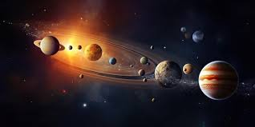

No vasto cosmos, descobri que a Terra não é o centro do universo, mas um dos muitos planetas que orbitam o Sol. Esta revelação não apenas redefiniu nossa compreensão do espaço, mas também nos lembrou da nossa posição humilde e da necessidade contínua de explorar os mistérios do cosmos. Que nossa busca pelo conhecimento celestial nos guie na jornada de descoberta de quem somos e nosso lugar no universo.
Visitar
No cosmos vasto, cada estrela é um farol de esperança e um lembrete da nossa conexão com tudo o que existe. Enquanto contemplamos sua beleza, lembramos da responsabilidade de proteger e preservar toda forma de vida. Em cada batalha contra o caos, encontramos não apenas desafios, mas também oportunidades para crescer e entender melhor nosso papel no universo. Que nossa busca por justiça e compaixão continue a iluminar o caminho através das estrelas, moldando um futuro de paz e harmonia para todos.
VisitarNo universo, vejo uma imensa tapeçaria de espaço e tempo entrelaçados. Cada estrela, cada galáxia, segue leis profundas que regem sua existência. A busca pela compreensão dessas leis revela não apenas a complexidade do cosmos, mas também a nossa capacidade de compreendê-lo. Em nossa jornada para desvendar os mistérios do universo, encontramos não apenas respostas, mas também novas questões que desafiam nossas percepções e expandem nosso entendimento do mundo ao nosso redor.
Visitar